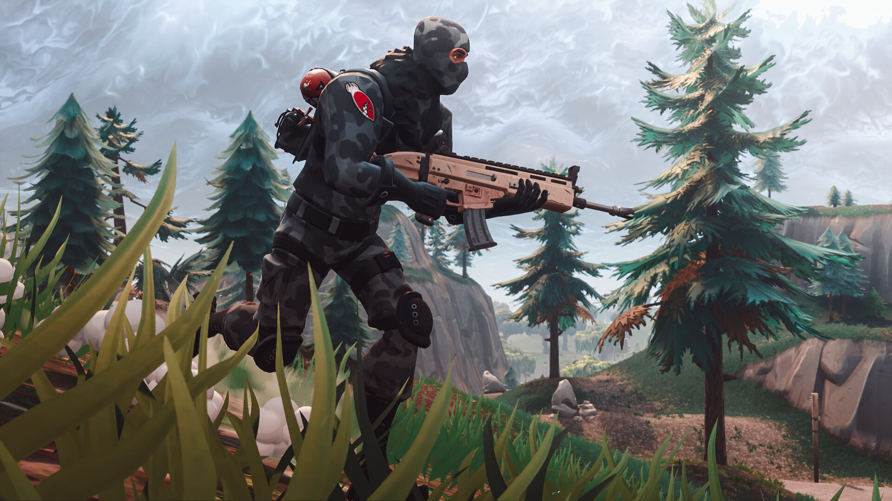

Fortnite l’un des jeux le plus joué au monde, est un jeu en ligne développer par les développeurs d’Epic Games et de People Can Fly. Sous la forme de différents progiciels*, Fortnite proposent différents mode de jeu qui partagent le même gameplay. Le premier est Fortnite: Sauver le monde un mode de jeu coopératif de tir et de survie conçu pour 4 joueurs maximum dont le but est de survivre, combattre des hordes de zombies et de défendre des objets par des fortifications construites par les joueurs. Le dernier mode de jeu est Fortnite: Battle Royale, après que le jeu PUBG était devenu un phénomènes mondial, ayant vendu plus de 5 millions d’exemplaire, les développeurs d’Epic Games a ainsi constaté que l’adaptation du mode Battle Royale était tout à fait possible et à donc développé sa propre version,comparé à Fortnite: Sauver le monde ( bêta sortit en 2011) le mode Battle Royal est sortit plus tard en 2017 comme jeu free-to-play. En 2018, ce fût l’arrivé du Mode Créatif apparu lors de la saison 7 et a été accessible à tous le 18 Décembre 2018. Dans ce mode de jeu, les joueurs peuvent créer des structures sur une île privée et les partager avec un maximum de 16 joueurs, pour divers modes de jeu multijoueurs avec des règles personnalisables. Comparer à d’autre Battle Royale, Fortnite, avec son graphisme cartoonesque, est presque autant qu'un jeu de construction qu’un jeu de survie. Le jeu peut utiliser une pioche pour détruire le décor et de récolter des matériaux pour pouvoir construire des tours ou se protéger des assaillants. Après ses 2 premières semaines de sortis le mode Fortnite: Battle Royal a rapidement gagné des joueurs, avec plus de 10 millions de joueurs.
Le principe est simple pour gagner 100 joueurs s'affrontent sur une île et il ne doit en rester qu’un (ou qu’une seule équipe de 2 ou de 4 joueurs). Les joueurs disposes d'une pioche, arriver sur l’île des coffres et des armes sont répartis aléatoirement sur la map,après s’être équipé il vous suffit de survivre ou de battre les autres joueurs pour gagner la partie. En duo ou en squad, vous n'êtes pas obligé d'être au complet pour gagner, si il vous reste qu'un joueur ou deux ou trois, à la fin, la Victoire Royale est gagné.
Vous ne pouvez pas joué à un jeu sans avoir un minimum de connaissance sur les mots utilisés par certains joueurs. Voici quelques mots de vocabulaire technique utilisé dans ce jeu: AIM: capacité qu'un joueur possède de viser rapidement des cibles avec précisions. Head Shot: lorsque vous tirez et touchez l'ennemie dans la tête. High ground: qui signifie “hauteur” est comme son nom l’indique est de garder le contrôle sur la hauteur pour avoir une meilleur vision sur l’ennemie. Build: mots anglais pour définir les matériaux de constructions ou qu’il y a eu des constructions à tels endroits.